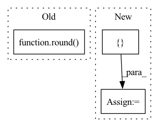

Pattern ID :14998

Before Change
ent = {
"start": ii,
"end": ff,
"label": str(round(scaled_att)),
}
ents.append(ent)
ii = ff
After Change
token, rgb = token_rgb.values()
ff = ii + len(token)
ent = {
"start": ii,
"end": ff,
"label": str(rgb.score),
}
ents.append(ent)
ii = ff
to_render = {
In pattern: SUPERPATTERN
Frequency: 4
Non-data size: 3
Instances
Fragment ID: 50444417
Project Name: dfki-nlp/thermostat
Commit Name: 039dfada1e0a0b420665e7406907088422ee9c78
Time: 2021-06-14
Author: feldhusnlp@gmail.com
File Name: src/thermostat/data/dataset_utils.py
M Class Name: Thermounit
N Class Name: Thermounit
M Method Name: render(1)
N Method Name: render(1)
M Parent Class:
N Parent Class:
M File Name: src/thermostat/data/dataset_utils.py
N File Name: src/thermostat/data/dataset_utils.py
M Start Line: 96
M End Line: 117
N Start Line: 109
N End Line: 123
'>
Before Change
// p4 ─> p4p5 ─> pan_out1
// ↓ ↑
// p3 ─> pan_out2 ───┘
csp_depth = max(round(depth_mul * 2), 1)
p3, p4, p5 = features // p3: [64, 64, 256], p4: [32, 32, 512], p5: [16, 16, 512]
p3 = conv_dw_pw_block(p3, p3.shape[-1] // 2, kernel_size=1, activation=activation, name=name + "p3_down_") // [64, 64, 128]
p4 = conv_dw_pw_block(p4, p4.shape[-1] // 2, kernel_size=1, activation=activation, name=name + "p4_down_") // [32, 32, 256]
After Change
// ↓ ↑
// p3 ─> pan_out2 ───┘
// features: [p3, p4, p5]
upsamples = [features[-1]]
p_name = "p{}_".format(len(features) + 2)
// upsamples: [p5], features[:-1][::-1]: [p4, p3] -> [p5, p4p5, p3p4p5]
for id, ii in enumerate(features[:-1][::-1]):
cur_p_name = "p{}".format(len(features) + 1 - id)
nn = conv_dw_pw_block(ii, ii.shape[-1] // 2, kernel_size=1, activation=activation, name=name + cur_p_name + "_down_")
p_name = cur_p_name + p_name
nn = upsample_merge([nn, upsamples[-1]], fpn_depth, use_depthwise_conv=use_depthwise_conv, activation=activation, name=name + p_name)
upsamples.append(nn)
downsamples = [upsamples[-1]]
// downsamples: [p3p4p5], upsamples[:-1][::-1]: [p4p5, p5] -> [p5, p4p5, p3p4p5]
for id, ii in enumerate(upsamples[:-1][::-1]):
cur_name = name + "c3n{}_".format(id + 3)
'>
Fragment ID: 50444419
Project Name: leondgarse/keras_cv_attention_models
Commit Name: bef44f2c07106cb7cf251facb6581ef6220cde48
Time: 2022-03-18
Author: leondgarse@gmail.com
File Name: keras_cv_attention_models/yolor/yolor.py
M Class Name: AnonimousClass
N Class Name: AnonimousClass
M Method Name: path_aggregation_fpn(5)
N Method Name: path_aggregation_fpn(5)
M Parent Class:
N Parent Class:
M File Name: keras_cv_attention_models/yolor/yolor.py
N File Name: keras_cv_attention_models/yolor/yolor.py
M Start Line: 139
M End Line: 152
N Start Line: 204
N End Line: 220
'>
Before Change
return boxes
elif is_tensor(boxes) :
x1y1= clip(round(boxes[:, 0:2] -boxes[:, 2:4] /2,0),0)
x2y2=clip(round(boxes[:, 2:4] + boxes[:, 0:2],0),0)
boxes=concate([x1y1,x2y2],axis=-1)
return boxes
After Change
x2 = cx+0.5*w
y2=cy+0.5*h
if len(boxes)>4:
boxlist=[x1, y1, x2, y2]
boxlist.extend(boxes[4:])
return np.array(boxlist)
return np.array([x1, y1, x2, y2])
'>
Fragment ID: 50444426
Project Name: allanyiin/trident
Commit Name: be0b3b73fa0bb531bd579b5341b36492ceb6a56e
Time: 2020-07-12
Author: allan@asiaminer.com.tw
File Name: trident/data/bbox_common.py
M Class Name: AnonimousClass
N Class Name: AnonimousClass
M Method Name: xywh2xyxy(2)
N Method Name: xywh2xyxy(2)
M Parent Class:
N Parent Class:
M File Name: trident/data/bbox_common.py
N File Name: trident/data/bbox_common.py
M Start Line: 58
M End Line: 78
N Start Line: 60
N End Line: 86
'>
Before Change
for i, br in enumerate(each_batch_ratio):
current_datasets = dataset[i]
current_batchsize = max(round(batch_size * float(br)), 1)
_dataloader = DataLoader(
current_datasets, batch_size=current_batchsize,
shuffle=shuffle, num_workers=num_workers,
After Change
class BaseDataloader(object):
def __init__(self, dataset, batch_size, each_usage, num_workers=4, shuffle=False):
if isinstance(each_usage, (float, int)):
each_usage = [each_usage]
assert isinstance(each_usage, list)
assert len(dataset) == len(each_usage)
self.dataloader_iter_list = []
'>
Fragment ID: 50444429
Project Name: media-smart/vedastr
Commit Name: 46b30f8dd844edf2d91d2f711ba88fd58f101ab4
Time: 2020-04-19
Author: 15029959637@163.com
File Name: vedastr/dataloaders/base.py
M Class Name: BaseDataloader
N Class Name: BaseDataloader
M Method Name: __init__(6)
N Method Name: __init__(7)
M Parent Class: object
N Parent Class: object
M File Name: vedastr/dataloaders/base.py
N File Name: vedastr/dataloaders/base.py
M Start Line: 9
M End Line: 28
N Start Line: 10
N End Line: 16